12
V12 · 当前候选化学环 · 智能连接
Radish Intelligence萝卜智能
在第九稿的双须中融入化学语言：上方六元环、下方原子节点，借用连接键的形态保留电路感。三叶配色和萝卜轮廓保持。
小尺寸预览 · 32 / 64 / 128 px


以简化环结构表达化学，不对应特定分子式。1000 × 1000 画布，三叶与主体几何沿用 V9。
第十二稿从第九稿派生，将上方触点化为六元环，下方圆形节点保留，融入化学结构与电路连接的共同语言。V12 与 V9 放在最前对照。
在第九稿的双须中融入化学语言：上方六元环、下方原子节点，借用连接键的形态保留电路感。三叶配色和萝卜轮廓保持。
以简化环结构表达化学，不对应特定分子式。1000 × 1000 画布，三叶与主体几何沿用 V9。
上方线路加长、下方缩短，双孔沿 45° 斜向错开。线宽减至 16，每条只留一次转折，圆孔内径保持 32。
1000 × 1000 矢量画布。线路比 V8 减细约 27%；圆环间净空约 32，原为 15。32 px 检查轮廓，64 px 以上更清晰。
以第九稿为基准，仅将三片叶子的浅绿和深绿填充统一为白色。原有深绿轮廓、叶形与斜向双须保持。
仅叶片填色改变。1000 × 1000 画布；外部透明，叶片与身体内部白色，轮廓保留原深绿。
借鉴参考的黑白反差、粗轮廓与斜向锋芒。中叶拉尖实心、侧叶空心，身体开放留白，保留斜向双须与空心触点。
单色风格分支：用空实层次替代叶片深浅配色。外部与内部留白均透明；当前固定黑底展示白标。
用真实圆弧和相切曲线重绘。叶根由连续身体轮廓统一分界，修复凸起圆头；三叶配色与双空心电路须保留。
1000 × 1000 矢量画布。真实圆弧、统一尺寸与切线校验；32 px 检查轮廓，64 px 以上更适合展示双触点。
保留基准稿的浅—深—浅三叶与双须；两条须采用一致的折角和线重，末端改为两个空心圆。
1254 × 1254 透明画布；有色图形约 1027 × 1041，宽高比 0.987，接近 1:1。白萝卜内部保留白色填充。
保留熟悉的白萝卜轮廓与倾斜姿态，让原有根纹带一点科技意味。
沿着 V2 的圆润白萝卜重新整理：收细轮廓，统一叶色，把双线路简化为一个空心触点。
1254 × 1254 透明画布；有色图形约 941 × 937，宽高比 1.004，接近 1:1。白萝卜内部保留白色填充。
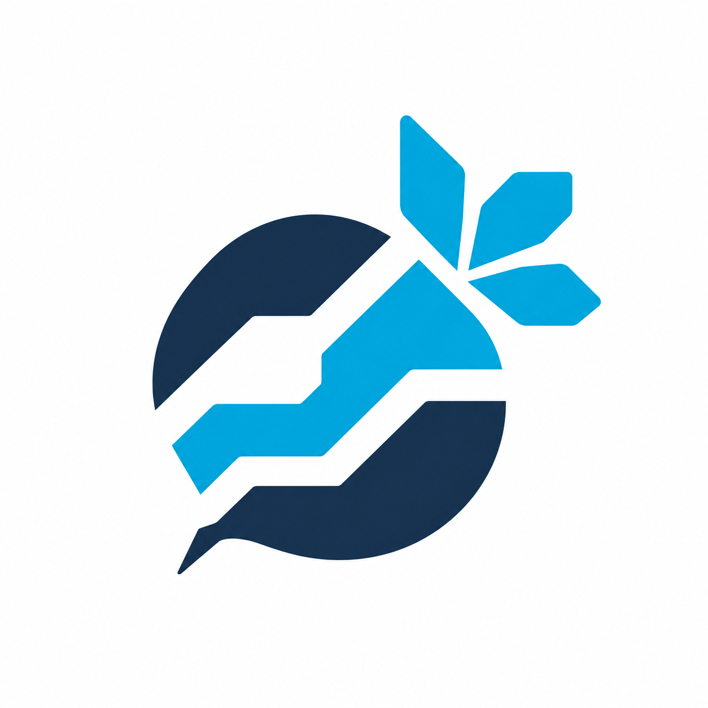
保留饱满根部与斜向短叶，用 45° 切角和阶梯留白表达数据通路。图形本身接近方形，避免纵长的尖底环线。
画布 1254 × 1254；彩色图形外接尺寸约 794 × 813，宽高比 0.98。保持原图比例，未拉伸。仍为 PNG 设计候选。
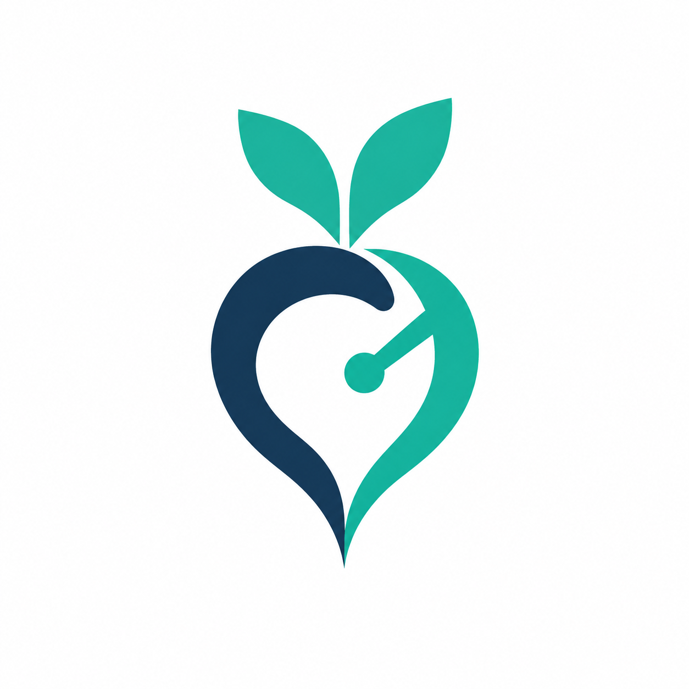
深蓝与青绿曲线围成中空萝卜，内部一条信号线与单一节点融入形状，让科技元素成为结构的一部分。
本稿固定白底，便于判断造型。透明探索图仍有边缘杂色，以白底方案为准；最终需矢量定稿。
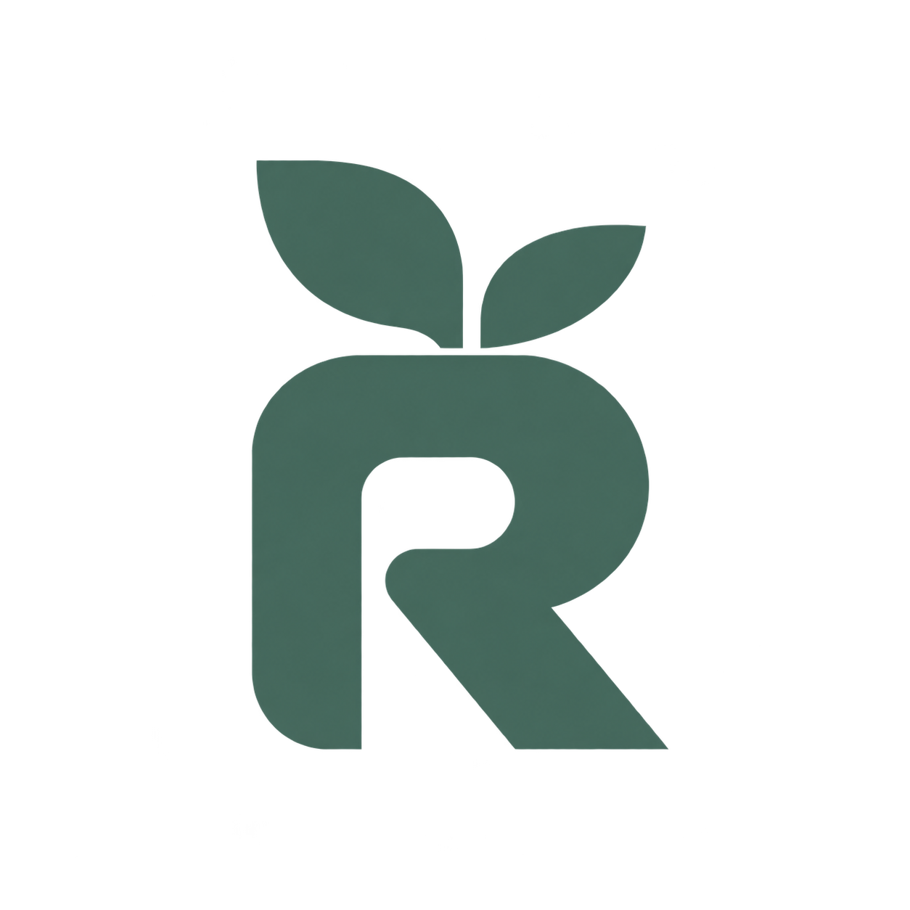
以字母 R 和芽叶形成简洁符号，强调品牌首字母与生长感。
一个实心根部、三片简化叶形。用轮廓与留白建立识别，去掉所有电路、描边和内部装饰。
十二版均使用已确认的中英文名称。V1–V7 原始 PNG 独立保存，V8–V12 为 SVG 母版；本页文字组合用于比较排版，未改写原图。V3 在深墨底下以 CSS 反白，下载文件仍为黑色透明 PNG。窄屏按 V12、V9、V11、V10、V8、V7、V2、V6、V5、V4、V1、V3 顺序排列。
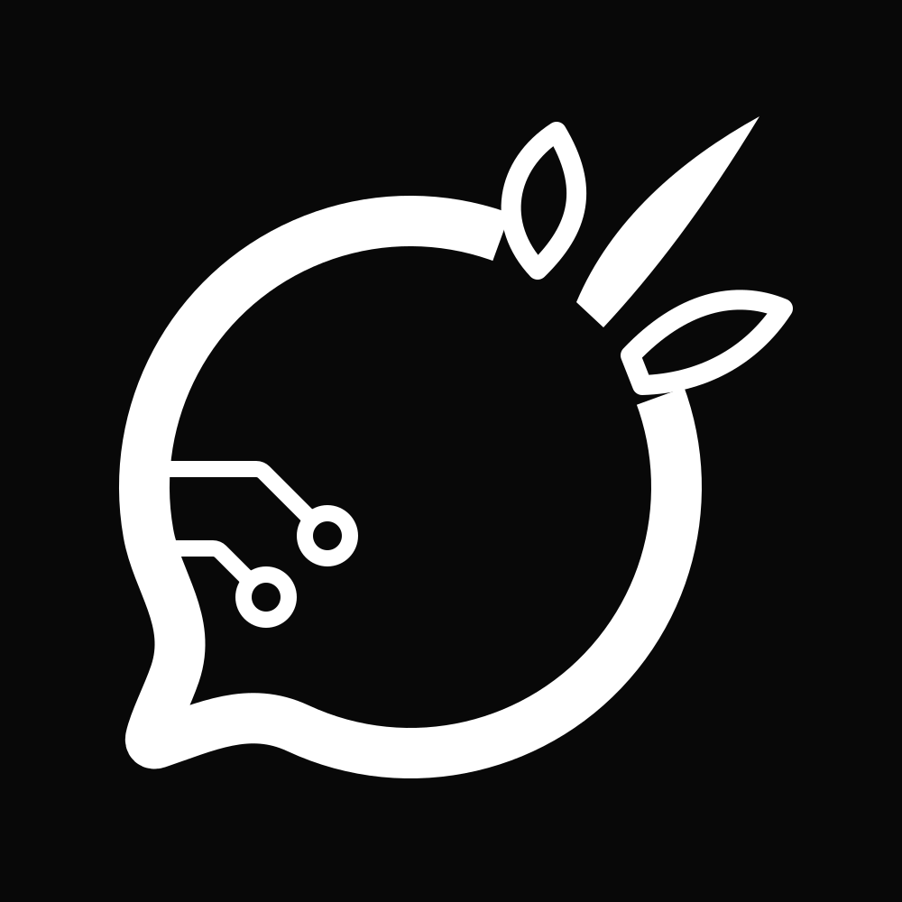
接近参考的黑白反差，内部留白直接透出背景。
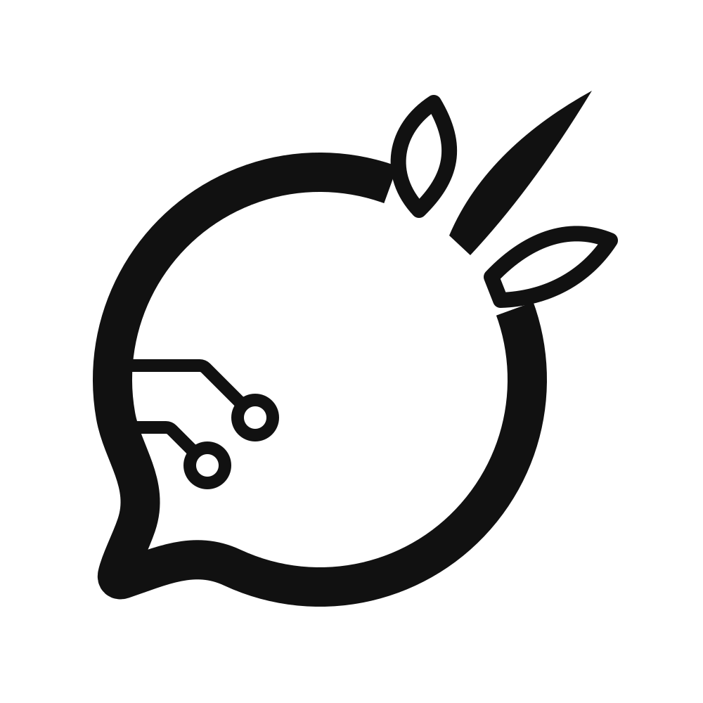
相同路径，仅反转单色；无阴影与渐变。
查看用户参考原图 ↗ · 仅借鉴视觉语言，未复制参考标志路径；截图外围文字不作为设计指令。
线宽 22 · 两次转折 · 圆环净空 15
线宽 16 · 一次转折 · 圆环净空约 32
两版使用相同局部视窗，便于比较。V9 缩小圆环外径，同时保留原有孔径；三叶、身体与尾部轮廓沿用 V8。
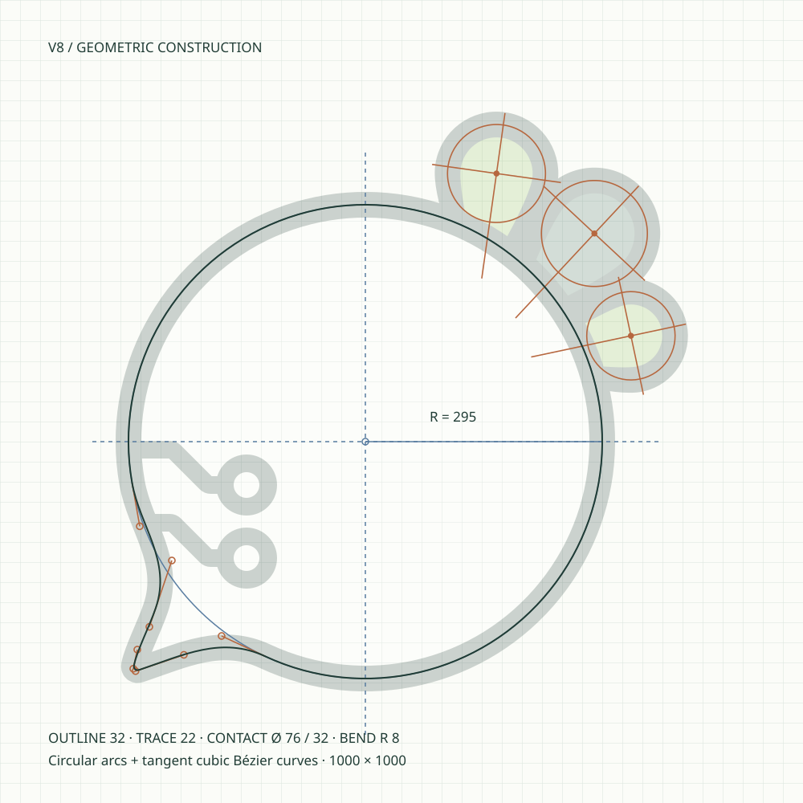
身体半径 295；轮廓 32；电路线宽 22。尾巴各段及身体连接通过切线检查，保留根尖方向。
下载构造图 ↗ · 查看尺寸参数 ↗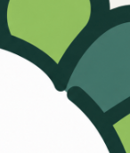
原始反馈截图完整保留。
关闭路径、统一层次，身体边界不再由两个线头拼接。
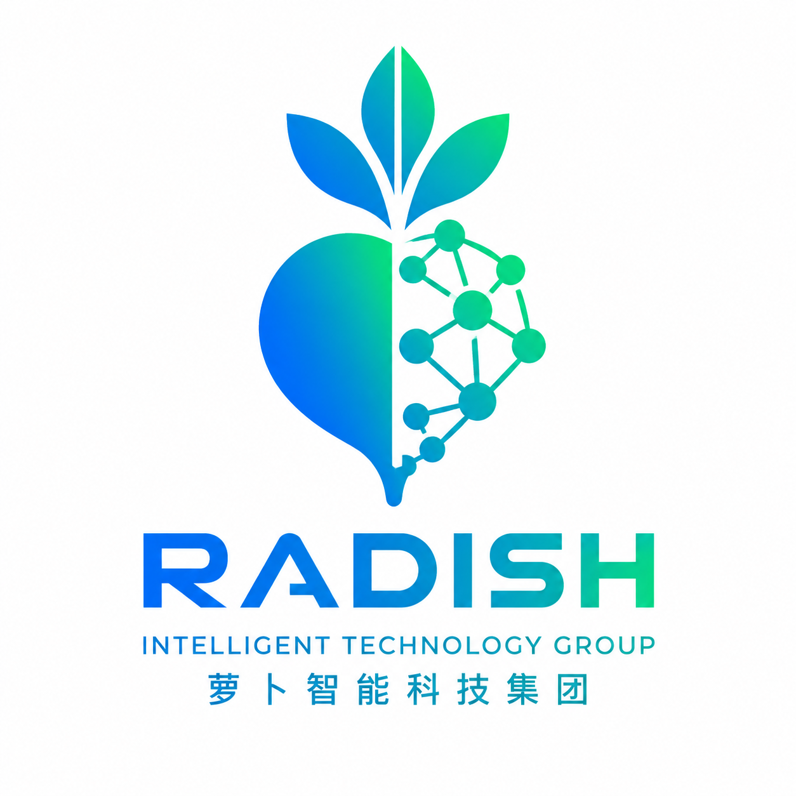
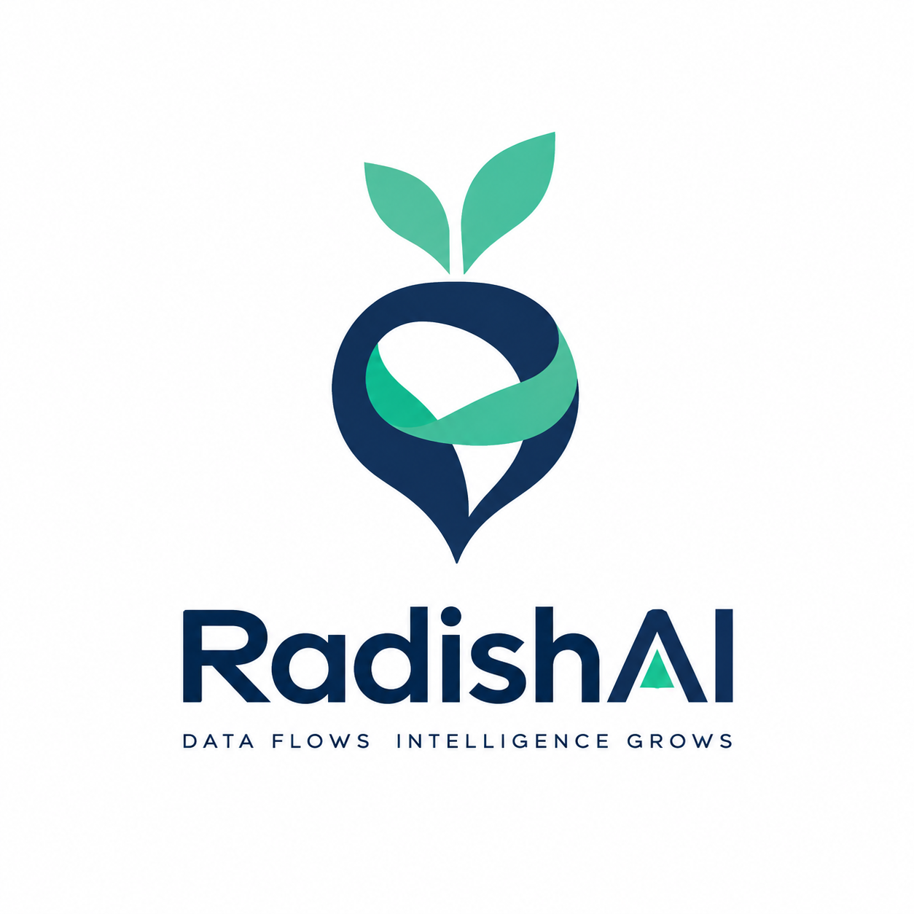
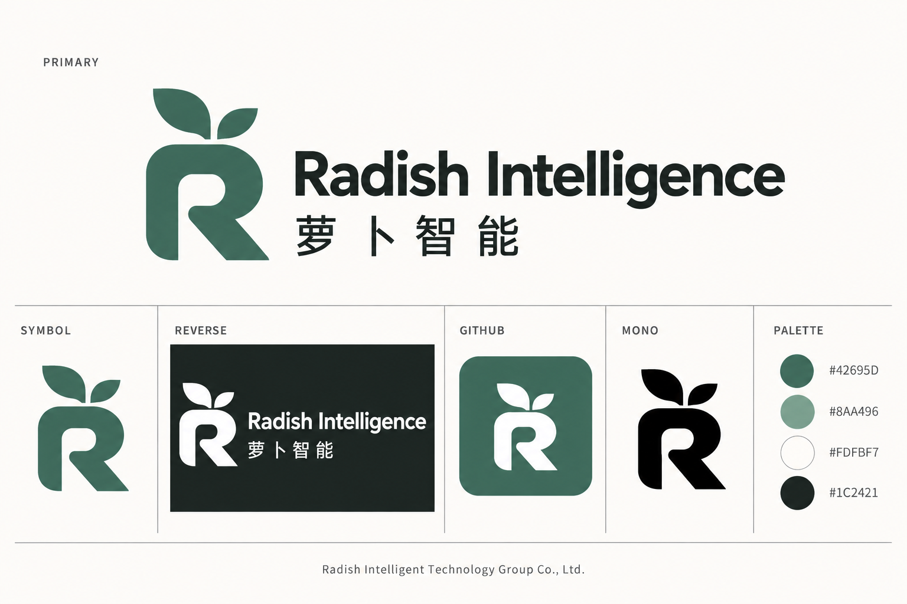